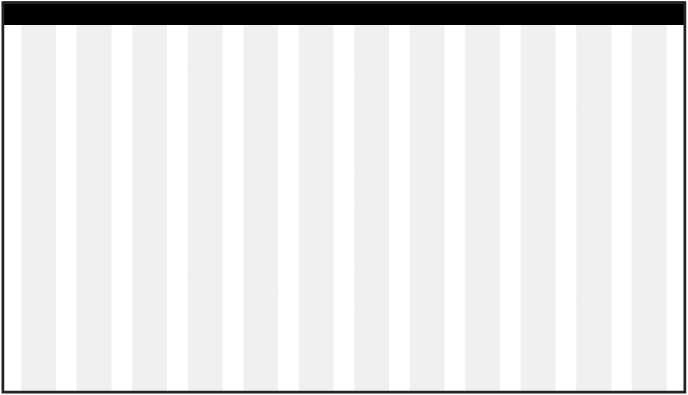
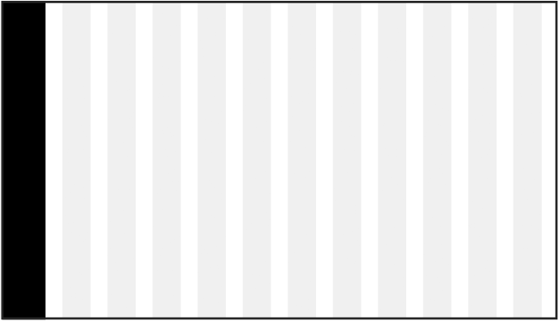

Consistency
The black ABB bar ties digital products together. It is flexible and can adapt to different product needs and work flows.


A clear, tidy and consistent navigation is vital to achieve an organized and user-friendly system.
There are many different navigation patterns, such as menus, tabs, tree navigation, breadcrumbs, etc. Choosing the best navigation pattern depends on amount of navigation choices, context of use and user workflow.
The black ABB bar ties digital products together. It is flexible and can adapt to different product needs and work flows.
Main application controls and content controls should be clearly defined from one another. Distinguish between the main application bar and the rest of the content. Create a clear hierarchy to help guide the user.
ABB applications typically struggle with complexity as the underlying information is complex. It is therefore even more important to strive for simplicity in the navigation structures. There should not be too many nested navigation schemes.